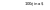
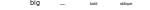

Tutorial
Compose is declarative
In a declarative graphics system, a figure is built without specifying the precise sequence of drawing commands but by arranging shapes and attaching properties. This makes it easy to break a complex graphic into manageable parts and then figure out how to combine the parts.
Everything is a tree
Graphics in Compose are defined using a tree structure. It's not unlike SVG in this regard, but has simpler semantics. There are three important types that make up the nodes of the tree:
Context: An internal node.Form: A leaf node that defines some geometry, like a line or a polygon.Property: A leaf node that modifies how its parent's subtree is drawn, like fill color, font family, or line width.
The all-important function in Compose, is called, not surprisingly, compose. Calling compose(a, b) will return a new tree rooted at a and with b attached as a child.
That's enough to start drawing some simple shapes.
using Compose
composition = compose(compose(context(), rectangle()), fill("tomato"))
draw(SVG("tomato.svg", 4cm, 4cm), composition)
The last line renders the composition to specificied backend, here the SVG backend. This can also be written like composition |> SVG("tomato.svg", 4cm, 4cm). Alternatively, if multiple compositions of the same size are to be generated, this can be abbreviated even further to
set_default_graphic_size(4cm, 4cm)
composition |> SVG("tomato.svg")
composition2 |> SVG("celery.svg")
composition3 |> SVG("rutabaga.svg") # etc...The compose function accepts S-expressions
In the first example, we had to call compose twice just to draw a lousy red square. Fortunately compose has a few tricks up its sleeve. As everyone from lisp hackers and phylogeneticists knows, trees can be defined most tersely using S-expressions. We can rewrite our first example like:
# equivalent to compose(compose(context(), rectangle()), fill("tomato")))
compose(context(), rectangle(), fill("tomato"))Furthermore, more complex trees can be formed by grouping subtrees with parenthesis or brackets.
composition = compose(context(),
(context(), circle(), fill("bisque")),
(context(), rectangle(), fill("tomato")))
composition |> SVG("tomato_bisque.svg")Trees can be visualized with introspect
A useful function for visualizing the graphic that you've constructed is introspect. It takes a Context defining a graphic and returns a new graphic with a schematic of the tree.
tomato_bisque =
compose(context(),
(context(), circle(), fill("bisque")),
(context(), rectangle(), fill("tomato")))
introspect(tomato_bisque)This is a little cryptic, but you can use this limited edition decoder ring:
using Compose, Colors, Measures
set_default_graphic_size(6cm, 4cm)
figsize = 6mm
t = table(3, 2, 1:3, 2:2, y_prop=[1.0, 1.0, 1.0])
t[1,1] = [compose(context(minwidth=figsize + 2mm, minheight=figsize),
circle(0.5, 0.5, figsize/2), fill(LCHab(92, 10, 77)))]
t[2,1] = [compose(context(minwidth=figsize + 2mm, minheight=figsize),
rectangle(0.5cx - figsize/2, 0.5cy - figsize/2, figsize, figsize),
fill(LCHab(68, 74, 192)))]
t[3,1] = [compose(context(minwidth=figsize + 2mm, minheight=figsize),
polygon([(0.5cx - figsize/2, 0.5cy - figsize/2),
(0.5cx + figsize/2, 0.5cy - figsize/2),
(0.5cx, 0.5cy + figsize/2)]),
fill(LCHab(68, 74, 29)))]
t[1,2] = [compose(context(), text(0, 0.5, "Context", hleft, vcenter))]
t[2,2] = [compose(context(), text(0, 0.5, "Form", hleft, vcenter))]
t[3,2] = [compose(context(), text(0, 0.5, "Property", hleft, vcenter))]
compose(context(), t, fill(LCHab(92, 10, 77)), fontsize(10pt))Contexts specify a coordinate system for their children
In addition to forming internal nodes to group Form and Property children, a Context can define a coordinate system using the context(x0, y0, width, height) form. Here we'll reposition some circles by composing them with contexts using different coordinate systems.
composition = compose(context(), fill("tomato"),
(context(0.0, 0.0, 0.5, 0.5), circle()),
(context(0.5, 0.5, 0.5, 0.5), circle()))
composition |> SVG("tomatos.svg")The context's box (i.e. (x0, y0, width, height)) is given in terms of its parent's coordinate system and defaults to (0, 0, 1, 1). All the children of a context will use coordinates relative to that box.
This is an easy mechanism to translate the coordinates of a subtree in the graphic, but coordinates can be scaled and shifted as well by passing a UnitBox to the units attribute.
composition = compose(context(),
(context(units=UnitBox(0, 0, 1000, 1000)),
polygon([(0, 1000), (500, 1000), (500, 0)]),
fill("tomato")),
(context(),
polygon([(1, 1), (0.5, 1), (0.5, 0)]),
fill("bisque")))
composition |> SVG("tomato_bisque_triangle.svg")Measures can be a combination of absolute and relative units
Complex visualizations often are defined using a combination of relative and absolute units. Compose makes these easy. In fact there are three sorts of units used in Compose:
- Context units: If no unit is explicitly attached to a number, it is assumed to be in “context units”, which are relative to the parent Context's box and coordinate system. (Constants:
cx,cy) - Width/Height units: Sometimes you'll want place geometry in relative coordinates, but bypassing the parent context's coordinate system. Width/height work so that
(0w, 0h)is always the top-left corner of the contxt, and(1w, 1h)is always the bottom-right. (Constants:w,h) - Absolute units: Absolute units are inches, centimeters, points, etc. (Constants:
inch,cm,mm,pt)
Any linear combination of these types of units is allowed. For example: 0.5w + 2cm - 5cx is a valid measure that can be used anywhere.
Forms and Properties can be vectorized
Often one needs to produce many copies of a similar shape. Most of the forms an properties have a scalar and vector forms to simplify this sort of mass production.
We'll use circle as an example, which has two constructors:
circle(x=0.5w, y=0.5h, r=0.5w)
circle(xs::AbstractArray, ys::AbstractArray, rs::AbstractArray)The first of these creates only circle centered at (x, y) with radius r. The second form can succinctly create many circles (using the Colors package to specify the LHCab colorspace):
composition = compose(context(),
circle([0.25, 0.5, 0.75], [0.25, 0.5, 0.75], [0.1, 0.1, 0.1]),
fill(LCHab(92, 10, 77)))
composition |> SVG("circles.svg")
The arrays in passed to xs, ys, and rs need not be the same length. Shorter arrays will be cycled. This let's us shorten this last example by only specifying the radius just once.
composition = compose(context(),
circle([0.25, 0.5, 0.75], [0.25, 0.5, 0.75], [0.1]),
fill(LCHab(92, 10, 77)))
composition |> SVG("cycled_circles.svg")The fill is a property can also be vectorized here to quickly assign different colors to each circle.
circles_fill_vectorized = compose(context(),
circle([0.25, 0.5, 0.75], [0.25, 0.5, 0.75], [0.1]),
fill([LCHab(92, 10, 77), LCHab(68, 74, 192), LCHab(78, 84, 29)]))
circles_fill_vectorized |> SVG("circles_fill_vectorized.svg")If vector properties are used with vector forms, they must be of equal length.
Compose can produce arbitrary directed graphs
Though we've so far explained compose as producing trees, there's nothing stopping one from producing an arbitrary directed graph. This can be quite useful in some cases.
In this example, only one triangle object is ever initialized, despite many triangles being drawn, which is possible because the graph produced by siepinski is not a tree. The triangle polygon has many parent nodes than “re-contextualize” that triangle by repositioning it.
function sierpinski(n)
if n == 0
compose(context(), polygon([(1,1), (0,1), (1/2, 0)]))
else
t = sierpinski(n - 1)
compose(context(),
(context(1/4, 0, 1/2, 1/2), t),
(context( 0, 1/2, 1/2, 1/2), t),
(context(1/2, 1/2, 1/2, 1/2), t))
end
end
composition = compose(sierpinski(6), fill(LCHab(92, 10, 77)))
composition |> SVG("sierpinski.svg", 8cm, 8*(sqrt(3)/2)*cm)
There are no safeguards to check for cycles. You can produce a graph with a cycle and Compose will run in an infinite loop trying to draw it. In most applications, this isn't a concern.
Fancier compositions
There are fancier forms of the compose function, in particular, variadic compose, which is roughly defined as:
compose(a, b, cs...) = compose(compose(a, b), cs...)Compose over tuples or arrays:
compose((as...)) = compose(as...)In effect, this lets one write a complex series of compose operations as an S-expression. For example:
compose(a, b, ((c, d), (e, f), g))Since all we are doing is building trees, this syntax tends to be pretty convenient.
Forms
These are basic constructors for the in-built forms - see the Forms gallery for examples.
polygon(points)rectangle(x0, y0, width, height)circle(x, y, r)ellipse(x, y, x_radius, y_radius)text(x, y, value)line(points)curve(anchor0, ctrl0, ctrl1, anchor1)bitmap(mime, data, x0, y0, width, height)arc(x, y, r, angle1, angle2, sector)sector(x, y, r, angle1, angle2)
Coordinates
Besides coordinate transformations, Compose also handles mixtures of relative and absolute coordinates. For example, 1w - 10mm is a well formed expression, giving the width of the parent canvas minus ten millimeters.
Text
Symbols can be used in text strings by inserting HTML codes. More general formatting for the SVG backend is documented here, whereas the Cairo backend uses a Pango markup language.
cents_ina_dollar = compose(context(), text(0.5, 0.5,"100¢ in a $"))
cents_ina_dollar |> SVG("dollar.svg",5cm,1cm)
Use the font and fontsize properties to change the appearance of type:
compose(context(),
(context(), text(0.2,0.5,"big"), fontsize(18pt)),
(context(), text(0.4,0.5,"small"), fontsize(6pt)),
(context(), text(0.6,0.5,"bold"), font("Helvetica-Bold")),
(context(), text(0.8,0.5,"oblique"), font("Helvetica-Oblique"))) |>
SVG("font_fontsize.svg",15cm,1cm)